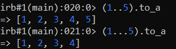
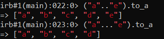
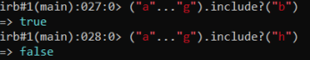
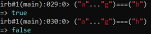

Ranges
We can create different ranges of values: numbers, characters, strings or objects in general.
A range is made of a:
• start value
• end value
• range of values in between
Ruby provides two different way to create ranges:
• the inclusive two-dot operator (a..b)
• the exclusive three-dot operator (a...b)
  the
to_a (to array) just converts the range into an array.
Check value belongs to a range We can use:
◇ include method
 ◇ === operator
